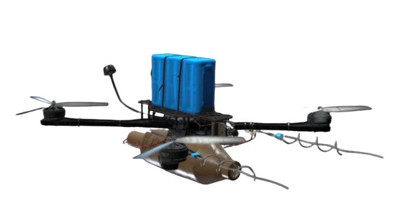
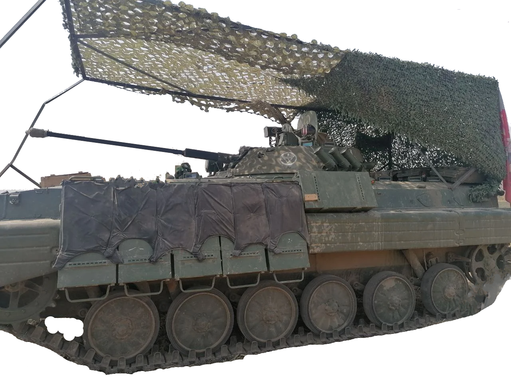

Modern Krigsteknologi
2010 - Nutid
Nyfiken på hur den moderna världen och slagfältet präglas av ny krigsteknologi?
Nyfiken på hur den moderna världen och slagfältet präglas av ny krigsteknologi?
1. Drönare är ingen ny uppfinning, det är något man använt sedan 1849. Då var det oftast ballonger
med
någon form av bomb monterad på konstruktionen. Drönare, eller obemannade flygfarkoster, utvecklades
senare under andra världskriget med bland annat den tyska kryssningsroboten V-1. Efter kriget
utvecklades drönare vidare, och de började se mer ut som dagens militära drönare.
Under denna tid var drönare främst byggda för spaning, men kriget i Ukraina har bevisat att de har
andra användningsområden.
Under den ryska invasionen av Ukraina började båda sidorna att använda FPV-drönare, alltså drönare
med en kamera på. Dess uppgift är både spaning samt attacker. Båda sidorna i kriget har monterat
fast sprängladdningar på drönarna som är till för att jaga fordon och infanteri.
Soldaterna som använder dessa sitter vanligtvis på platser runt tre kilometer från fronten, vilket
gör grupperna säkra från eldhandvapen och andra lågkalibriga vapensystem.
Den största fördelen med mindre FPV-drönare är kostnaden, om man jämför med vad en modern militär drönare kostar, upp mot 300 miljoner kronor, så är det ett mycket billigare alternativ för att uppnå ungefär samma mål.

Amerikansk MQ-9 Reaper, priset är runt 300 miljoner svenska kronor.
2. Denna nya strategi med drönare har utvecklat kriget vidare, till exempel har pansarskyttefordon varit särskilt utsatta för drönarattacker, vilket har lett till att man har satt galler och staket längst utsidan av dem. Eftersom granaterna från drönarna detonerar när de är nära fordonen så kommer pansarspränggranaterna detonera tidigt och inte göra någon skada på fordonen. Drönartekniken har gjort första världskrigets skyttegravar mindre effektiva då drönarna lätt kan helt enkelt åka ovanför skyttegravarna och bekämpa soldater. Detta har lösts genom korsuer, en mindre bunker i marken med tak, väggar, dörr och sovplatser. Den enda delen som är oskyddad från drönare är ett litet fönster riktat mot fienden. Dessa är även mycket enkla att maskera, så de är ofta hemliga för fienden.
Pansarskyttefordon med skyddande metallgaller.
Moderna konflikter har inte präglats av stridsfordon på samma sätt som förr, just på grund av
drönare. Det är inte längre lika lönsamt att ha bepansrade fordon då de går att upptäcka hur lätt
som helst med moderna metoder. Något detta märks särskilt bra är stridsvagnar, de är mycket dyra och
kraftfulla maskiner, men kan fortfarande slås ut med en enda handgranat genom en öppen lucka.
Från år 2022 till 2024 så har det förlorats ungefär 9000 olika stridsvagnar i den ryska invasionen
av Ukraina. Tillsammans producerar båda sidorna (Notera att donationer ej är medräknade) ungefär 800
stridsvagnar per år. Detta pekar på att framtidens konfilkter inte kommer använda dyra stridsvagnar
under längre perioder då de går åt alldeles för fort.
3. På grund av att det i dagens krig är så lätt att upptäcka fiender med IR-kameror och motsvarande
så
har många företag utvecklat kamouflagenät som skyddar olika varma föremål från att synas av bland
annat drönare. Det har gjort att soldater som sover i tält inte syns på värmekameror och därmed
överlever mer. Företag har även under senare tider utvecklat maskeringsnät som är radaravvisande och
därför mycket svåra att upptäcka från både flygplan, och fordon med någon form av
radarsystem.
Dessa kamouflagetaktiker används också väldigt ofta för att maskera militära
fordon.
Modernt kamouflagenät.
4. Hypersoniska vapen är en teknologi som innebär något som kan röra sig fem gånger så fort som ljudet, ungefär 1,7 kilometer per sekund. Fördelen med detta är att det är mycket svårt att nedkämpa dem under sin färd. Denna teknologi började utvecklas under 1930-talet i Tyskland. Silbervogel var ett koncept som hade i uppgift att leverea 4000 kg-bomber på den amerikanska kontinenten. Det byggdes aldrig en prototyp, men designen levde vidare och inspirerade kryssningsrobotar under det kalla kriget.
Bild av konceptet Silbervogel.
Under senare år har man börjat utveckla liknande
hypersoniska vapensystem, såsom den ryske roboten Kh-47M2 Kinzjal. Den ska ha använts under
Ukrainakriget för att förstöra ukrainska mål. Det har rapporterats att roboten skjutits ner trots
sin hastighet på 3,4 kilometer i sekunden.
Betyder detta att hypersoniska vapen inte har en
plats i framtiden eftersom de fortfarande går att bekämpa med moderna luftvärnssystem?
Rysk MiG-31 med en Kh-42 Kinzjal-robot fäst på undersidan.
5. Hypersoniska farkoster nyttjar tekniken som kallas för scramjet, en typ av jetmotor som endast funkar vid överljudshastighet. Istället för att komprimera luften med turbiner så komprimerar den sig själv av den höga hastigheten. Teoretiskt så kan denna motor få en farkost att komma upp i hastigheter högre än 20 gånger ljudhastigheten.